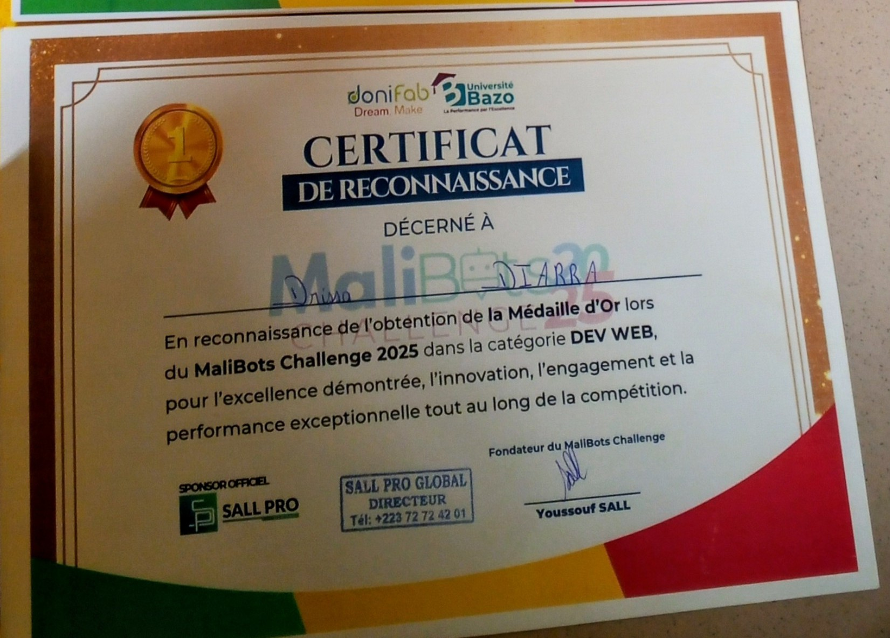
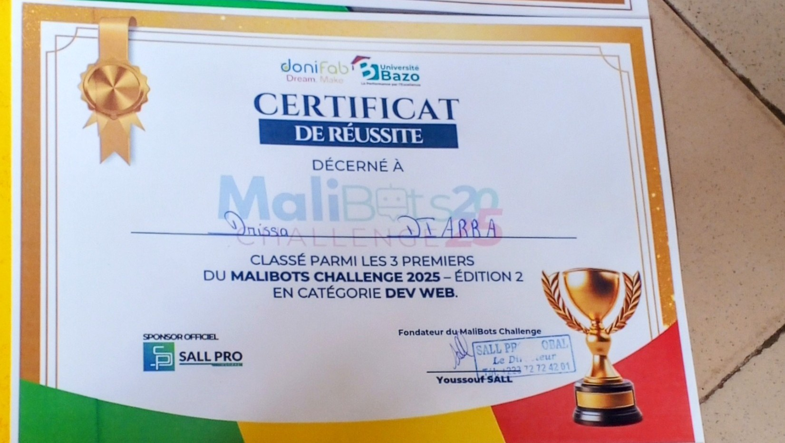
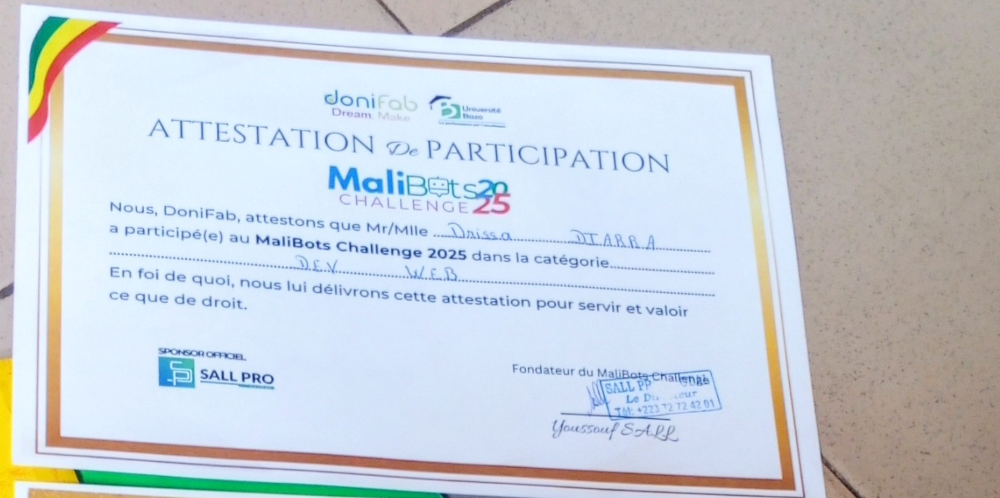

Les exploits de H@CKERBOY
Une archive des défis relevés, des résultats obtenus et des leçons qui restent utiles après la compétition.
Vainqueur du MaliBots Challenge 2025
H@CKERBOY a remporté la médaille d’or dans la catégorie Dev Web du MaliBots Challenge 2025. Une reconnaissance de la créativité, de l’engagement et de la performance démontrée pendant la compétition.
Voir le parcours ↗

MaliBots Challenge · DjoniFab × Université BazoGagner, puis continuer à apprendre.
Le MaliBots Challenge 2025 a marqué une étape importante : une médaille d’or en catégorie Dev Web, avec une reconnaissance officielle de l’excellence démontrée pendant la compétition.
Au-delà du classement, l’expérience rappelle une règle simple : une bonne solution combine compréhension du besoin, exécution propre, capacité à itérer et présentation claire.
Un exploit n’est pas seulement une ligne dans un palmarès. C’est une preuve que la pratique, la curiosité et la discipline peuvent produire quelque chose de concret.
Certificats MaliBots 2025
Les documents fournis pour garder une trace de cette étape.
